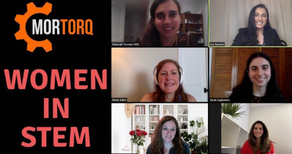
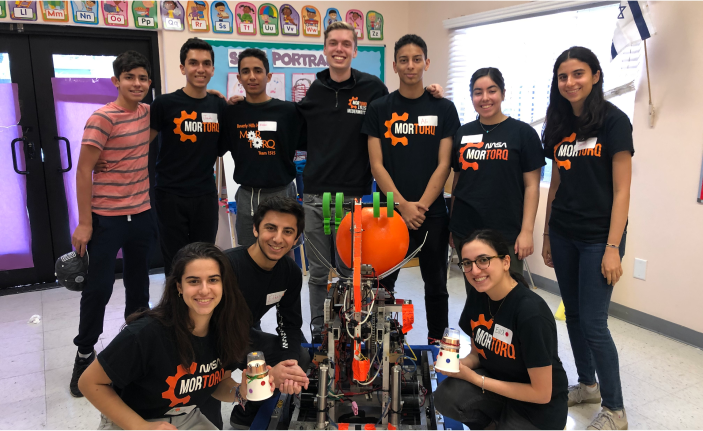

Mission Statement
Mission statement: We strive to inspire future generations to pursue careers in STEM and Entrepreneurship by encouraging inclusion, leadership, ingenuity and teamwork.
Women in STEM Series

As a high-school robotics team we bring STEM to our communities and enable students to grow by hosting events such as the Women in STEM Speaker Series, where female professionals talk about their successes and challenges. The event is normally hosted at our district middle school to maximize participation. The pandemic closing our school has not stopped us. Instead, we hosted a Women in STEM event via Zoom (https://www.youtube.com/watch?v=NtGfkWQAIGY) which was posted on our school’s media class’s YouTube channel. We recently hosted our second virtual Women in STEM event and are currently planning our next one.
Albion Street
At Albion Street Elementary, our team led 3rd-5th graders in engineering challenges and gave them a chance to drive our robot, hoping to show these students the excitement of STEM. The engineering challenge was a pasta
Friendship Circle
We also took our robot to the Friendship Circle, an organization that provides programming for children with special needs. We showed the children our robot, how we control it, and also did a robot related arts and crafts activity with them.
